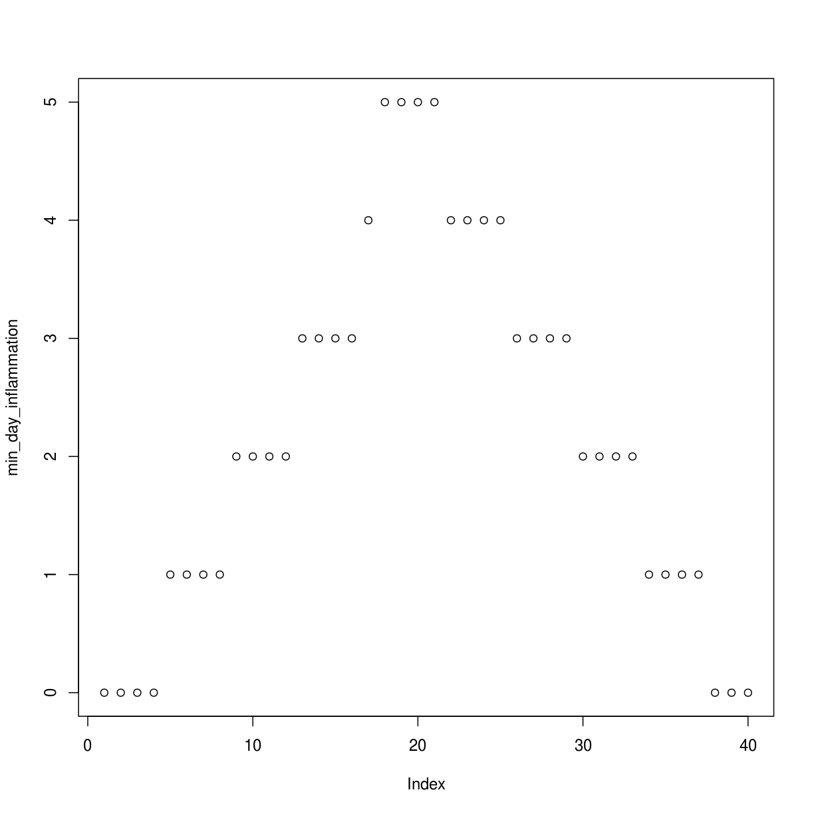
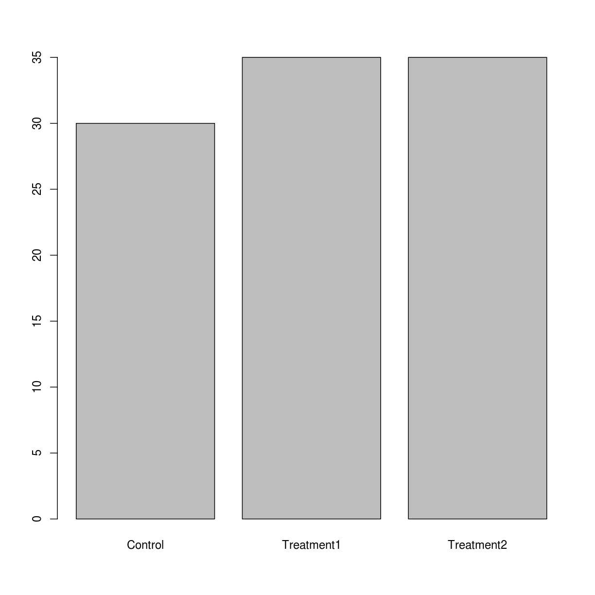
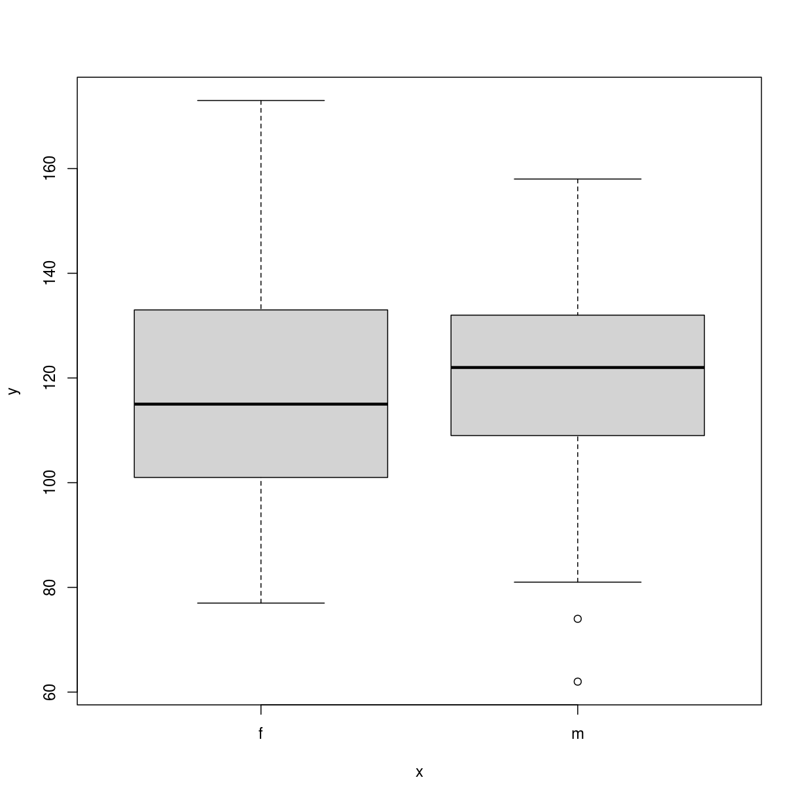

Toggle navigation
Home
Code of Conduct
Setup
Reference
Episodes
Analyzing Patient Data
Creating Functions
Analyzing Multiple Data Sets
Making Choices
Command-Line Programs
Best Practices for Writing R
Dynamic Reports with knitr
Making Packages in R
Introduction to RStudio
Addressing Data
Reading and Writing CSV Files
Understanding Factors
Data Types and Structures
The Call Stack
Loops in R
Extras
About
Discussion
Figures
Instructor's Guide
License
Programming with R
: Figures


